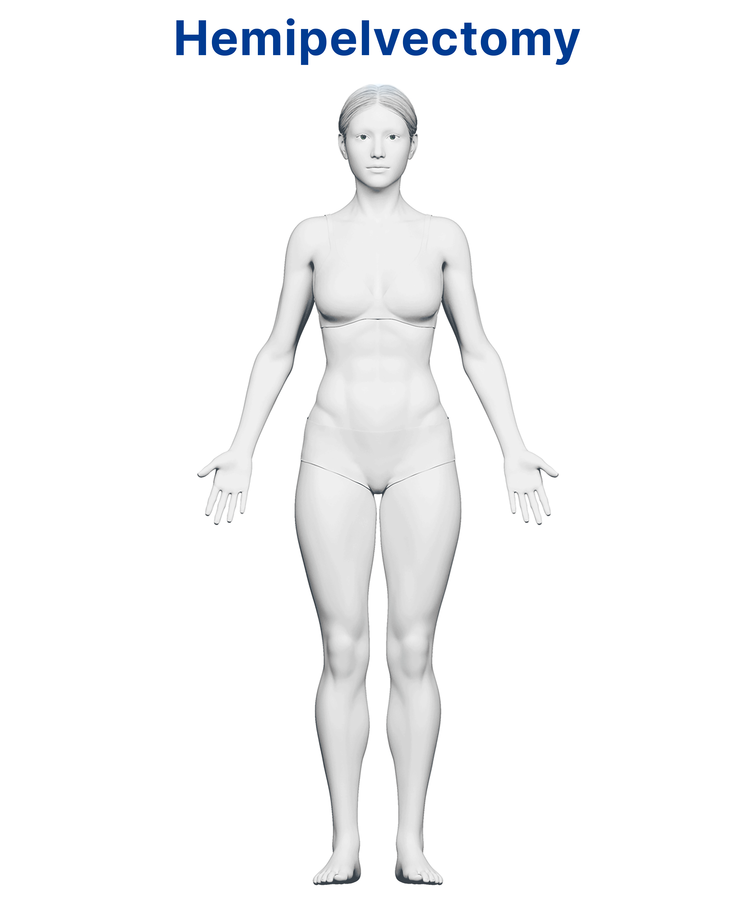

APPLICATION FOR
SENIOR DIGITAL DESIGNER
SENIOR DIGITAL DESIGNER
JINHA KANG
Jinha Kang is an award-winning
Multidisciplinary Designer
&
Digital Designer
based in New York City—the city where creativity never sleeps.
With
4+ years
of experience across fast-paced newsrooms, cutting-edge tech,
and global ad agencies, she creates work that lives at the
intersection of design and technology. She holds an MFA in
Digital + Media from Rhode Island School of Design (RISD) and
a BFA from Seoul National University.
Jinha’s mission? To become the bridge between the two—blending emotion with innovation, and aesthetics with impact.
Jinha’s mission? To become the bridge between the two—blending emotion with innovation, and aesthetics with impact.
Skills
: Adobe Creative Suite (Illustrator, Photoshop, InDesign, Adobe
XD, Express, Fire Fly) HTML, CSS, Basic JS & C++,
Midjourney, Flourish, Infogram


Science Infographic
Link to the Article

Environmental Infographic
Link to the Article
Interactive Health Graphic
Link to the Article
Click to interactive!

Health Infographic
Link to the Article

Before & After using AI imagery
Link to the Article

Wellness Graphic
Link to the Article

Machinery Infographic
Link to the Article
Educational Graphic
Link to the Article

Informational Graphic
Link to the Article
Stock Line Graph
Link to the Article
Finance Interactive Graph
Link to the Article
Trend Interactive Graph
Link to the Article
Health Interactive Map
Link to the Article
County Map
Link to the Article

Outbreak Map
Link to the Article
© All rights reserved. Jinha Kang
Email: jinhakang.usa@gmail.com